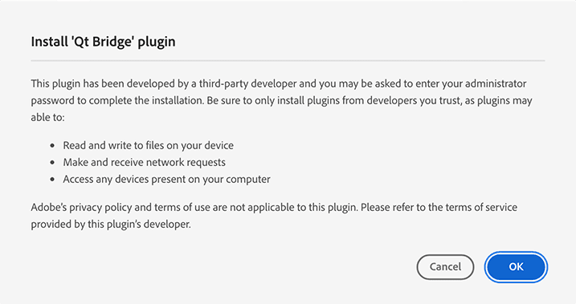

Setting Up Qt Bridge for Adobe XD
Qt Bridge for Adobe XD is included in the Qt Design Studio Enterprise license. You can use Qt Online Installer to have the Qt Bridge for Adobe XD plugin package copied to the following path in your Qt installation folder:
- On Windows:
Tools\QtDesignStudio\xd_bridge\qtbridge.xdx - On macOS:
QtDesignStudio/xd_bridge/qtbridge.xdx.
Note: Install Adobe XD before installing the plugin.
To install the Qt Bridge for Adobe XD plugin to Adobe XD, double-click qtbridge.xdx in the xd_bridge folder in the installation directory of Qt Design Studio. Adobe XD will automatically install Qt Bridge for Adobe XD.
Note: Since the plugin is not distributed through Adobe's marketplace, during the installation Adobe XD might warn about the third-party developer.

You can launch the plugin from Plugins > Qt Bridge.